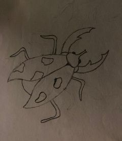

Parasitkäfer
Parasitkäfer

- eine Art Käfer
- befällt einen Körper (Wirt)
- schwarz-grün
- übernimmt langsam die Kontrolle und ernährt sich von Eingeweiden
- nach 2 Monaten ca. stirbt der Wirt
- innerhalb dieser Zeit kann der Parasit aber noch getötet und der Wirt damit gerettet werden, je nach Zustand der Organe